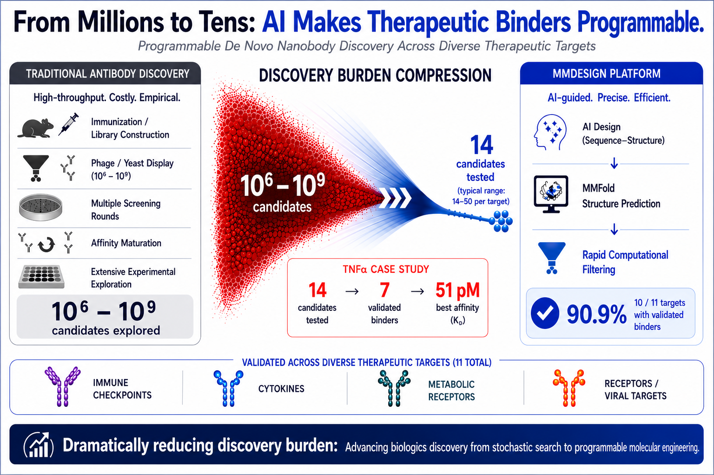
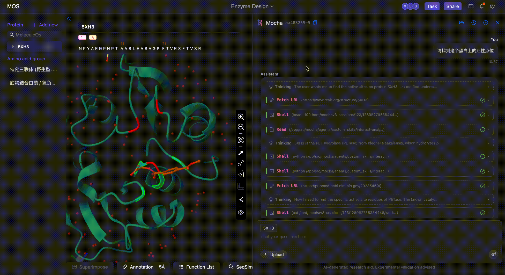

AI Daily: Meitu Xiuxiu Joins WeChat AI Ecosystem; Qwen Unveils Full-Cycle College-Application Agent; Meituan Debuts AI Browser Tabbit 1.0
Welcome to [AI Daily] — your daily briefing on the world of artificial intelligence.
Discover new AI products at: https://app.aibase.com/zh
1. Meitu Xiuxiu has joined the WeChat AI ecosystem, as multiple platforms completed their initial integrations in tandem.
WeChat has officially opened access to its AI ecosystem. Meitu Xiuxiu has been selected as an inaugural beta application, to be embedded across multiple image-processing contexts.

📌 📱 Meitu Xiuxiu has entered the WeChat AI ecosystem. 🔄 Multiple platforms have completed their initial integrations concurrently.
2. Alibaba's Qwen has unveiled a full-cycle agent for Gaokao college applications.
Alibaba's Qwen has released a Gaokao application agent, offering end-to-end coverage from institution search to recommendation.

📌 🎓 Qwen has released a Gaokao application agent. 📊 Spans the full cycle from institution search to recommendation.
3. Meituan's AI browser, Tabbit 1.0, has been officially launched.
Meituan's AI browser Tabbit 1.0 has been officially deployed, delivering intelligent web browsing and information retrieval capabilities.

📌 🌐 Meituan's AI browser Tabbit 1.0 has been officially launched. 🧠 Delivers an intelligent browsing experience.
4. Kimi Code's open-source coding agent has been upgraded.
Kimi Code's open-source coding agent has been upgraded to support the automation of increasingly complex programming tasks.

5. A new global payment channel for AI agents has been established by Ant Group.
Ant Group has established a new global payment channel for AI agents, enabling autonomous cross-border payment execution.
📌 🌍 Ant Group has established a new global payment channel for AI agents. 💳 Enables autonomous cross-border payments.
6. ChatGPT has rolled out an emergency lockdown mode.
ChatGPT has been deployed with an emergency lockdown mode, strengthening user privacy safeguards.
7. The WeChat Open Platform has published AI ecosystem integration guidelines.
The WeChat Open Platform has published AI ecosystem integration guidelines, establishing the standards for developers to access the WeChat AI ecosystem.
📌 📋 The WeChat Open Platform has published AI ecosystem integration guidelines. 🔌 Mini programs now support direct WeChat AI invocation.
8. Moonshot AI has secured an additional $2 billion in funding.
Moonshot AI has closed a new $2 billion funding round, resulting in a substantial valuation uplift.